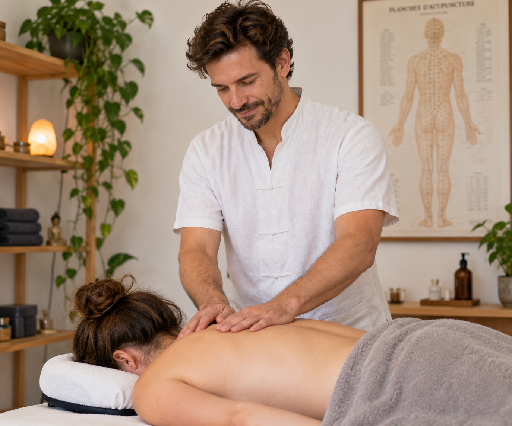
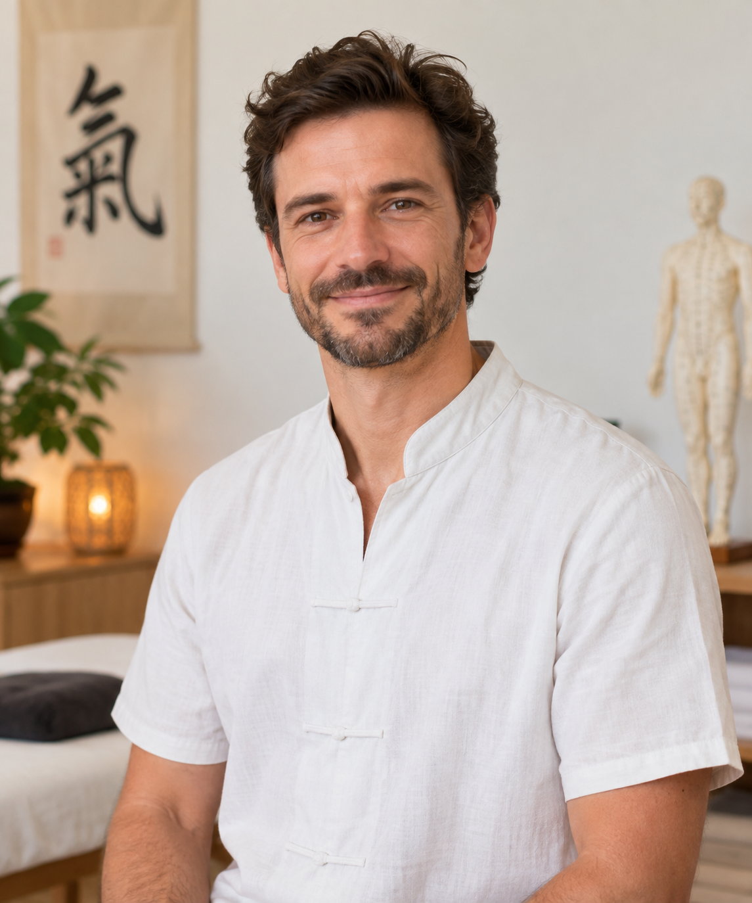
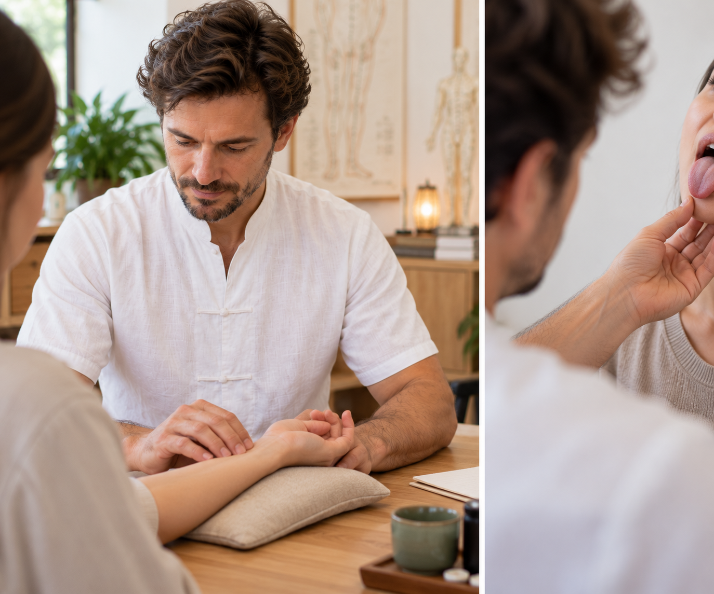

« Chaque personne est unique, et on oublie souvent qu'elle est la mieux placée pour parler de ce qui se passe en elle. Chaque mot, chaque expression compte. » Cabinet de Médecine Traditionnelle Chinoise à Lodève, spécialisé dans le soulagement des douleurs chroniques ou persistantes (fibromyalgie, endométriose, migraines, douleurs articulaires et digestives), du stress, de l'anxiété et des troubles du sommeil.


Depuis l'enfance, j'ai toujours eu cette sensibilité qui m'appelait à aider, écouter, soulager mon prochain. Les livres, l'histoire et la philosophie chinoise, la théorie du yin et du yang, des cinq éléments, m'ont toujours attiré : elles proposent un autre regard sur la manière dont nous abordons le monde et la santé. Corps, esprit et état émotionnel sont pour moi les faces d'une même pièce, et la santé dépend de l'harmonie entre les deux.
Après plusieurs expériences professionnelles et personnelles, le chemin vers la Médecine Traditionnelle Chinoise s'est imposé naturellement : une pratique millénaire qui, par la diversité de ses outils, propose aujourd'hui encore une alternative intéressante et un complément certain au bien-être de chacun.
Je me forme à la méthode d'équilibre du docteur Tan auprès de « Si Yuan ». Ma pratique se distingue par une place importante donnée au massage (Tuina, Amma, Foot Thaï) : le soin par le toucher est central pour moi, et je combine souvent les deux approches. Je souhaite particulièrement accentuer ma pratique sur les douleurs chroniques (fibromyalgie, endométriose) ainsi que développer une offre de bien-être au travail.
C'est une méthode basée sur l'écoute, l'observation et la palpation. Le but est d'avoir un résultat rapide en trouvant un protocole adapté à la personne, puis de pérenniser les résultats. J'utilise des points de stimulation situés à distance de la douleur ou de la gêne, ce qui permet de mobiliser la zone concernée et de voir en temps réel une amélioration.
Je m'appuie essentiellement sur le protocole du docteur Tan, que ce soit pour les douleurs ou pour les problèmes internes, et j'affine mon diagnostic par la palpation des méridiens, en m'inspirant du Dr Wang Ju-Yi.
| Phase | Fréquence | Durée |
|---|---|---|
| Intensive | 2 à 3 séances par semaine | 1 à 4 semaines selon la pathologie et l'ancienneté du problème |
| Stabilisation | 1 séance par semaine | Selon les résultats |
| Maintien (si besoin) | 1 séance par mois à 1 séance par trimestre | Selon les résultats |

Prenez rendez-vous pour un bilan énergétique et un accompagnement adapté à votre situation.
Prendre rendez-vous